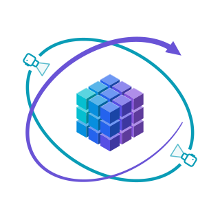

GeoState: Learning View-Decoupled Geometry States for 3D World ModelingAbstract
Recent 3D world models increasingly use features from geometry foundation models (GFMs) as predictive world states, benefiting from their rich geometric priors. However, the view dependence of these features entangles scene dynamics with camera-induced variation, making the resulting state evolution harder to predict. We propose GeoState, a view-decoupled geometry representation for predictive 3D world modeling that separates scene-state evolution from camera-dependent observation. Specifically, a scene tokenizer aggregates multi-view GFM features into a view-decoupled scene state, which a geometry decoder queries using camera rays. An autoregressive world model then predicts future scene states, while camera motion is modeled separately. The predicted states can therefore be decoded under either predicted or externally specified cameras, while retaining a single context-derived scale throughout the rollout without per-frame scale alignment. Experiments show that GeoState outperforms prior 3D world models on Waymo, supports geometrically consistent cross-view querying, and generalizes zero-shot to KITTI and nuScenes.
Method Overview

GeoState Learning: We train a Scene Tokenizer to transform multi-view VGGT-Ω features into a fixed-size, view-decoupled GeoState of shape 512 × 512, and a query-conditioned Geometry Decoder to reconstruct depth maps from arbitrary viewpoints.
GeoState World Modeling: We train an autoregressive World Model to predict future GeoStates from four historical states. The predicted states are then decoded into future depth maps under either predicted or user-specified camera viewpoints.
The Scene Tokenizer, Geometry Decoder, and World Model contain 70.46M, 135.55M, and 256.55M parameters, respectively.
Interactive Demos
Comparisons
BibTeX
@misc{liu_geostate,
title={{GeoState}: Learning View-Decoupled Geometry States for {3D} World Modeling},
author={Hongchang Liu and Jian Liu and Yujuan Ding and Liang Peng and Xun Jiang and Fei Ma and Xing Xu and Yi Bin}
}